Penalties & Stewards
Every stewards' decision, infringement, fine and penalty from the FIA event documents.
| Doc | Driver | Session | Matter | Ruling |
|---|---|---|---|---|
| Doc 13 | Fernando Alonso; Oliver Bearman; Kimi Antonelli; Lando Norris | Free Practice 1 | Note Deletion of the lap times shown. NoteCompetitors are reminded that they have the right to appeal certain decisions of the Stewards, in accordance with Article 15 of the FIA International Sporting CodView FIA decision — 1 pageOriginal FIA PDF. Retrieved 2026-09-25T06:13:38+00:00 (not the issue date). 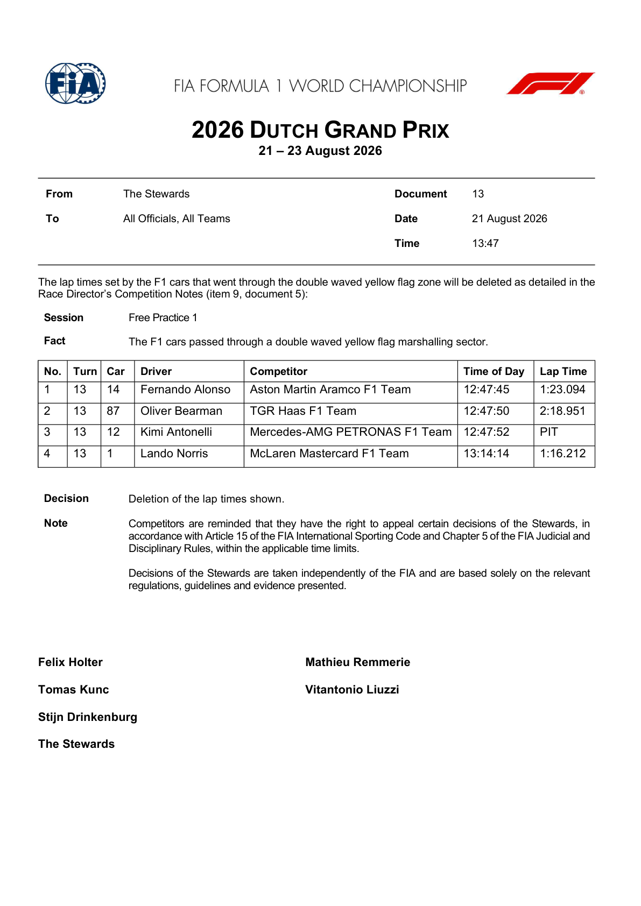 | |
| Doc 14 | Carlos Sainz; Lewis Hamilton; Nico Hulkenberg; Lando Norris | Free Practice 1 | Note Deletion of the lap times shown in accordance with Article 12.4.1.e of the FIA International Sporting Code. Note Competitors are reminded that they have the right to appeal certain decisions of the SView FIA decision — 1 pageOriginal FIA PDF. Retrieved 2026-09-25T06:13:38+00:00 (not the issue date). 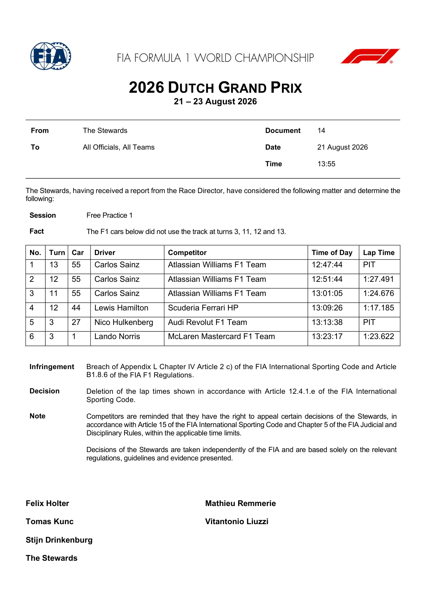 | |
| Doc 19 | Kimi Antonelli; Fernando Alonso; Alexander Albon | Sprint Qualifying | The F1 cars below did not use the track at turns 1, 3 and 13. | Note Deletion of the lap times shown in accordance with Article 12.4.1.e of the FIA InternationalView FIA decision — 1 pageOriginal FIA PDF. Retrieved 2026-09-25T06:13:38+00:00 (not the issue date). 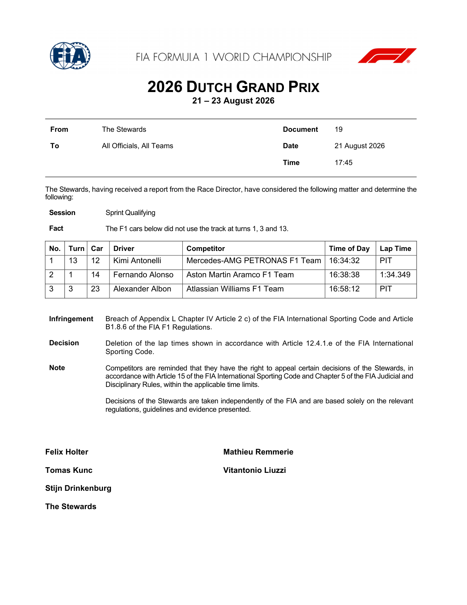 |
| Doc 20 | Esteban Ocon; Liam Lawson; Arvid Lindblad; Lance Stroll; Gabriel Bortoleto; Max Verstappen; George Russell; Kimi Antonelli; Carlos Sainz; Pierre Gasly; Valtteri Bottas | Sprint Qualifying | The F1 cars below exceeded the 1:28.00 time limit between the Safety Car lines. | No action No further action.View FIA decision — 2 pagesOriginal FIA PDF. Retrieved 2026-09-25T06:13:38+00:00 (not the issue date). 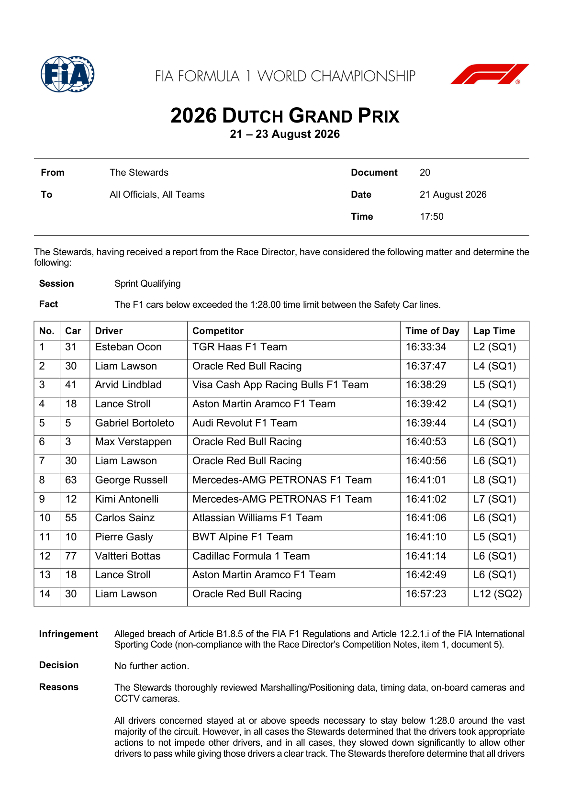 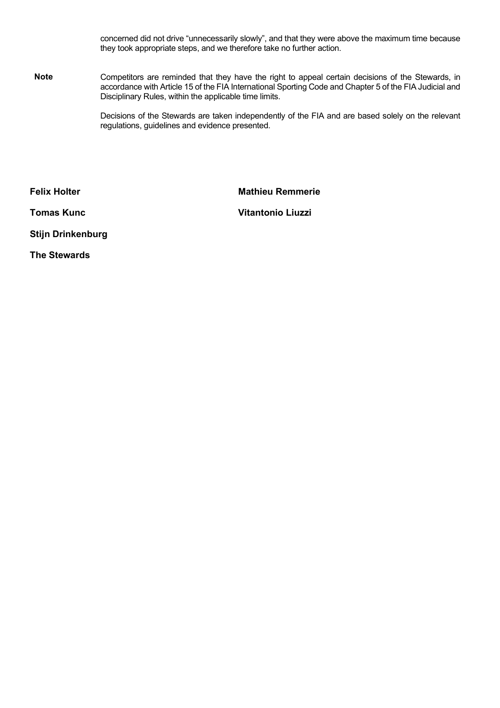 |
| Doc 22 | Carlos Sainz #55 Atlassian Williams F1 Team | Sprint Qualifying | Car 55 driving unnecessarily slowly during Sprint Qualifying | Warning Driver: Warning.View FIA decision — 2 pagesOriginal FIA PDF. Retrieved 2026-09-25T06:13:38+00:00 (not the issue date). 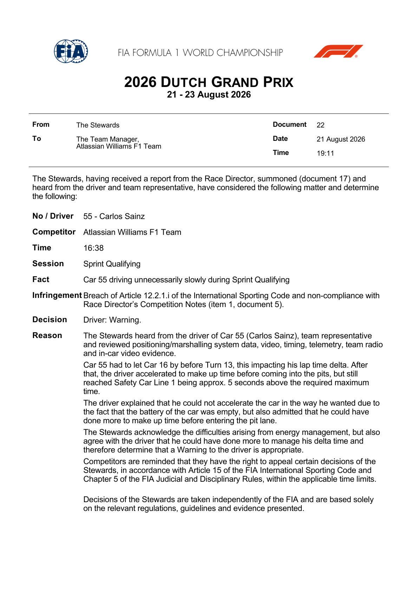 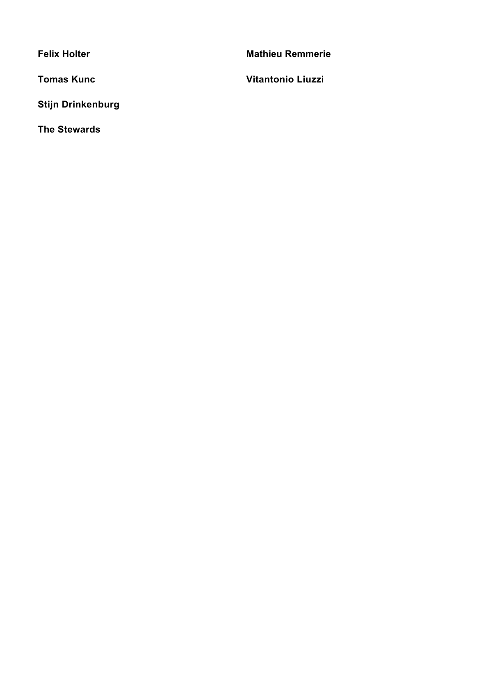 |
| Doc 29 | Carlos Sainz #55 Atlassian Williams F1 Team | Sprint Qualifying | The setup of the suspension has been changed while under parc fermé. | Note Required to start the Sprint from the pit lane.View FIA decision — 1 pageOriginal FIA PDF. Retrieved 2026-09-25T06:13:38+00:00 (not the issue date). 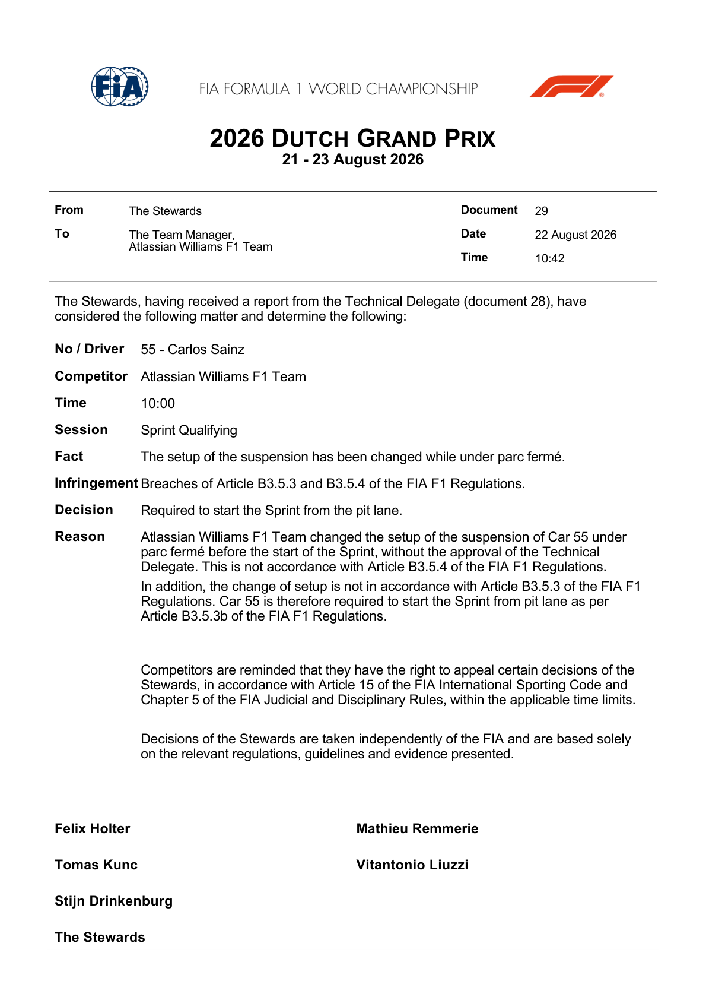 |
| Doc 30 | Fernando Alonso #14 Aston Martin Aramco F1 Team | Sprint Qualifying | The setup of the suspension has been changed while under parc fermé. | Note Required to start the Sprint from the pit lane.View FIA decision — 1 pageOriginal FIA PDF. Retrieved 2026-09-25T06:13:38+00:00 (not the issue date). 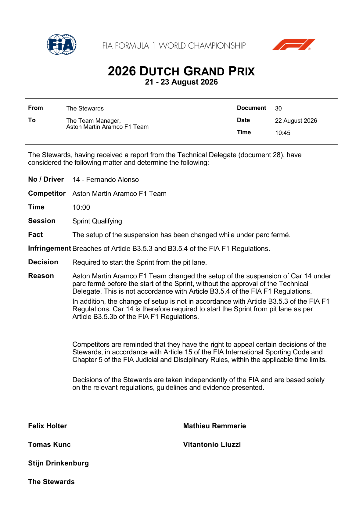 |
| Doc 33 | Carlos Sainz #55 Atlassian Williams F1 Team | Sprint | Car 55 overtook Car 77 during the formation lap. | Warning Driver: Warning.View FIA decision — 1 pageOriginal FIA PDF. Retrieved 2026-09-25T06:13:38+00:00 (not the issue date). 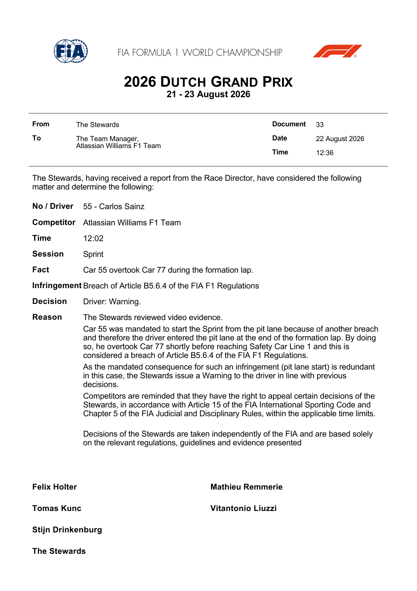 |
| Doc 36 | Pierre Gasly #10 | Sprint | The F1 car below did not use the track at turn 3. | Note Deletion of the lap time shown in accordance with Article 12.4.1.e of the FIA InternationalView FIA decision — 1 pageOriginal FIA PDF. Retrieved 2026-09-25T06:13:38+00:00 (not the issue date). 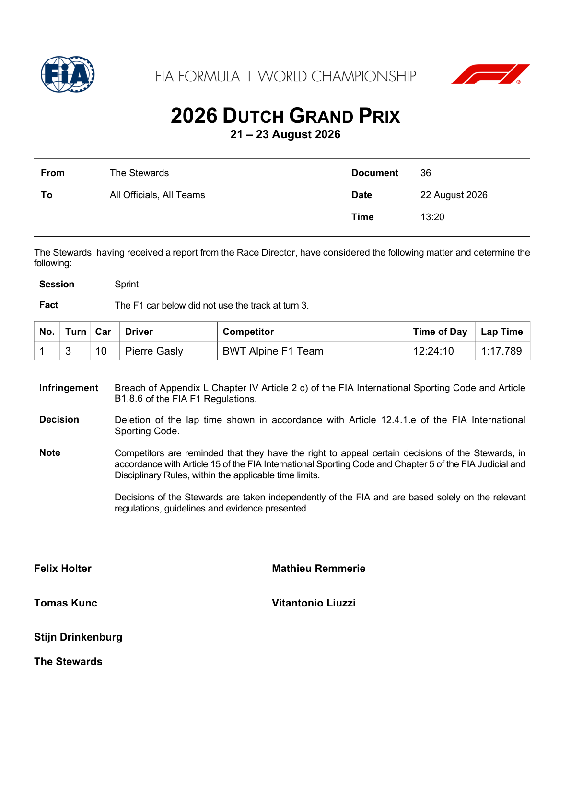 |
| Doc 37 | Valtteri Bottas #77 Cadillac Formula 1 Team | Sprint | The driver of Car 77 stopped his car before Safety Car Line 1 when driving to the | No action No penalty is applied.View FIA decision — 1 pageOriginal FIA PDF. Retrieved 2026-09-25T06:13:38+00:00 (not the issue date). |
| Doc 38 | Lewis Hamilton #44 Scuderia Ferrari HP | Sprint | The driver of Car 44 stopped his car before Safety Car Line 1 when driving to the | No action No penalty is applied.View FIA decision — 1 pageOriginal FIA PDF. Retrieved 2026-09-25T06:13:38+00:00 (not the issue date). |
| Doc 39 | Max Verstappen #3 Oracle Red Bull Racing | Sprint | The driver of Car 3 stopped his car before Safety Car Line 1 when driving to the grid. | No action No penalty is applied.View FIA decision — 1 pageOriginal FIA PDF. Retrieved 2026-09-25T06:13:38+00:00 (not the issue date). 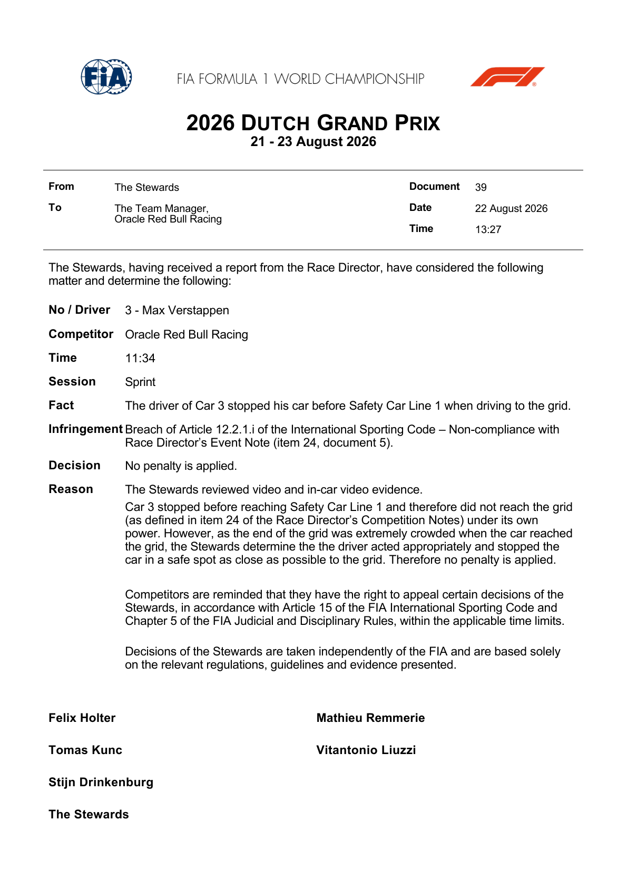 |
| Doc 40 | Yuki Tsunoda #22 Visa Cash App Racing Bulls F1 Team | Sprint | The driver of Car 22 stopped his car before Safety Car Line 1 when driving to the | No action No penalty is applied.View FIA decision — 1 pageOriginal FIA PDF. Retrieved 2026-09-25T06:13:38+00:00 (not the issue date). 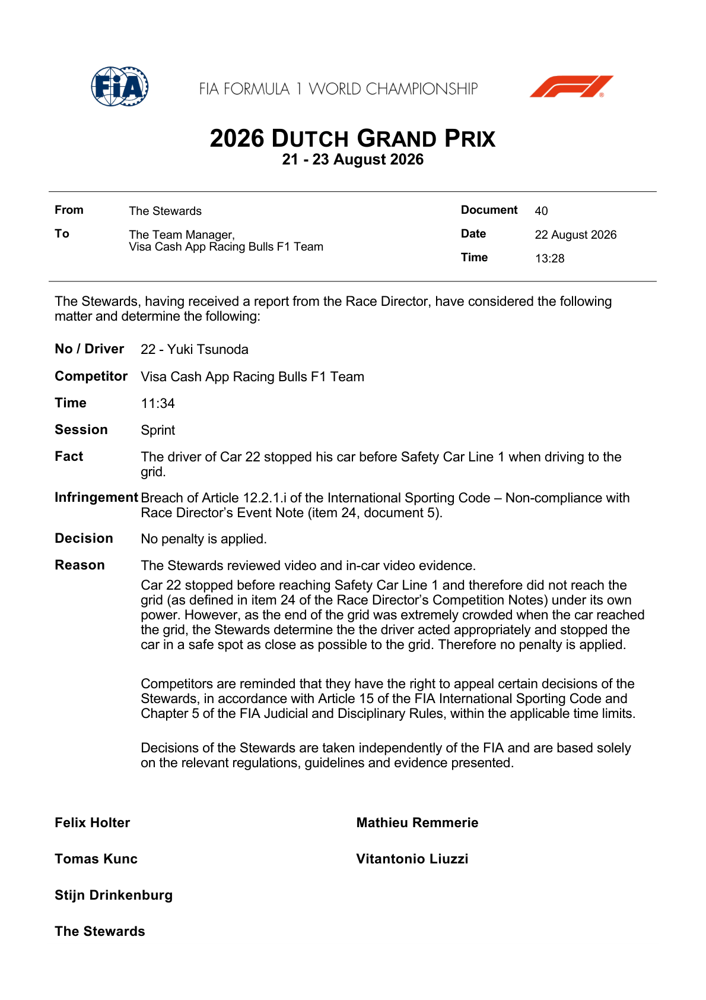 |
| Doc 41 | Lance Stroll #18 Aston Martin Aramco F1 Team | Sprint | The driver of Car 18 stopped his car before Safety Car Line 1 when driving to the | No action No penalty is applied.View FIA decision — 1 pageOriginal FIA PDF. Retrieved 2026-09-25T06:13:38+00:00 (not the issue date). 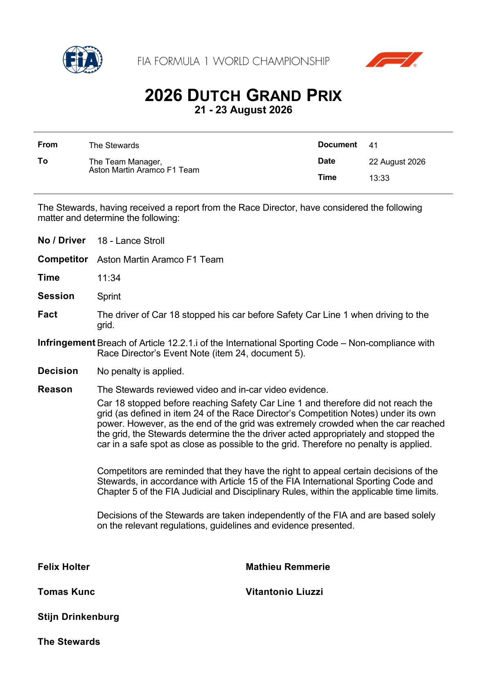 |
| Doc 42 | Gabriel Bortoleto #5 Audi Revolut F1 Team | Sprint | Car 5 was released into the path of Car 87 on the way to the reconnaissance laps. | Warning Competitor: Warning.View FIA decision — 1 pageOriginal FIA PDF. Retrieved 2026-09-25T06:13:38+00:00 (not the issue date). 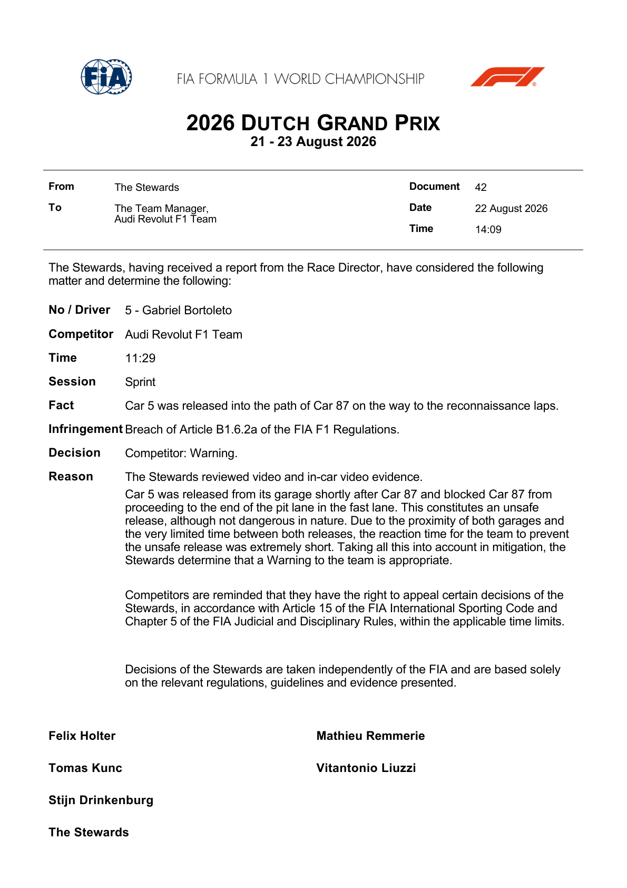 |
| Doc 52 | Pierre Gasly #10 BWT Alpine F1 Team | Qualifying | Alleged unsafe release of Car 10 | No action No further action.View FIA decision — 2 pagesOriginal FIA PDF. Retrieved 2026-09-25T06:13:38+00:00 (not the issue date). 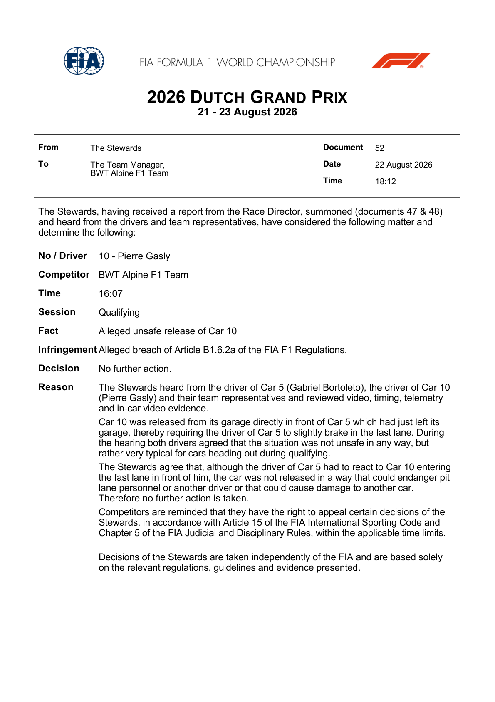 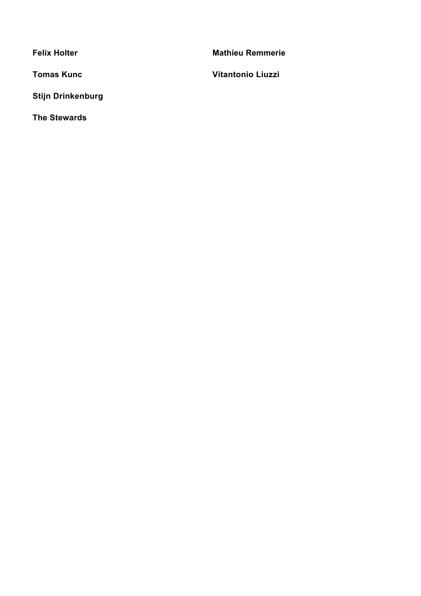 |
| Doc 59 | Sergio Perez #11 Cadillac Formula 1 Team | Qualifying | The setup of the suspension has been changed while under parc fermé. | Note Required to start the Race from the pit lane.View FIA decision — 1 pageOriginal FIA PDF. Retrieved 2026-09-25T06:13:38+00:00 (not the issue date). 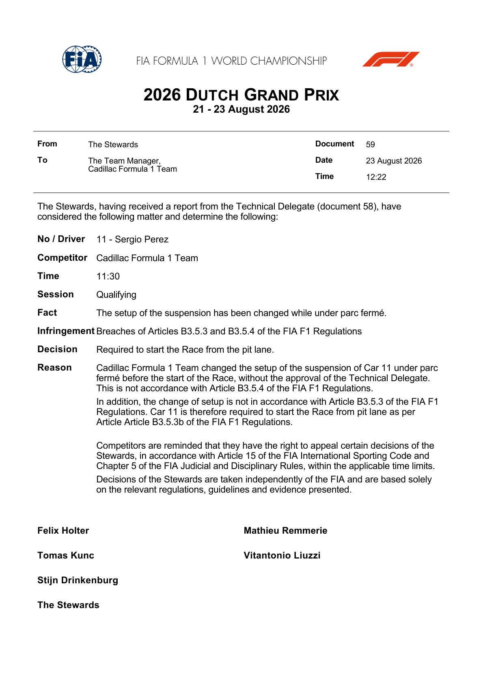 |
| Doc 62 | Arvid Lindblad #41 Visa Cash App Racing Bulls F1 Team | Race | Car 41 overtook Car 10 in a double yellow flag sector | Penalty Drive through penalty.View FIA decision — 1 pageOriginal FIA PDF. Retrieved 2026-09-25T06:13:38+00:00 (not the issue date). |
| Doc 63 | Franco Colapinto #43 BWT Alpine F1 Team | Race | Car 43 overtook Car 22 in a double yellow flag sector | Penalty Drive through penalty.View FIA decision — 1 pageOriginal FIA PDF. Retrieved 2026-09-25T06:13:38+00:00 (not the issue date). 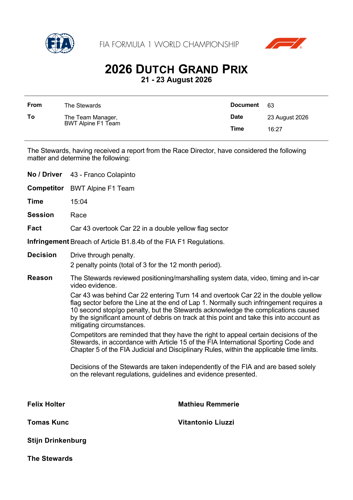 |
| Doc 65 | Franco Colapinto #43 BWT Alpine F1 Team | Race | Failure to slow for a single yellow flag in Turn 3. | Penalty 10 second time penalty.View FIA decision — 1 pageOriginal FIA PDF. Retrieved 2026-09-25T06:13:38+00:00 (not the issue date). 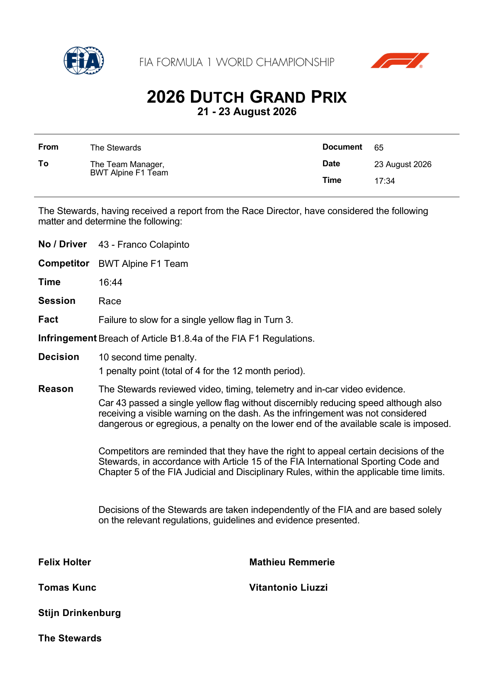 |
| Doc 66 | Liam Lawson #30 Oracle Red Bull Racing | Race | Failure to slow for a single yellow flag in Turn 3. | Penalty 10 second time penalty.View FIA decision — 1 pageOriginal FIA PDF. Retrieved 2026-09-25T06:13:38+00:00 (not the issue date). 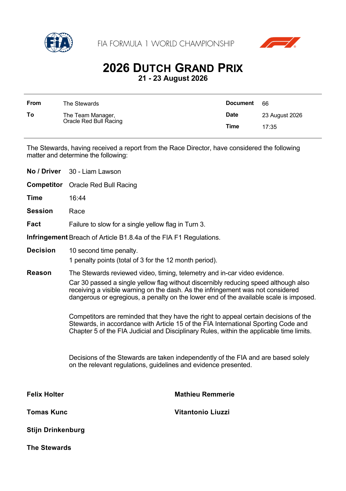 |
| Doc 67 | Nico Hulkenberg; Arvid Lindblad; Lance Stroll; Oscar Piastri; Yuki Tsunoda; Carlos Sainz; Alexander Albon; Esteban Ocon; Sergio Perez | Race | The F1 cars below did not use the track at turns 1, 3, 11 and 13. | Note Deletion of the lap times shown in accordance with Article 12.4.1.e of the FIA InternationalView FIA decision — 2 pagesOriginal FIA PDF. Retrieved 2026-09-25T06:13:38+00:00 (not the issue date). 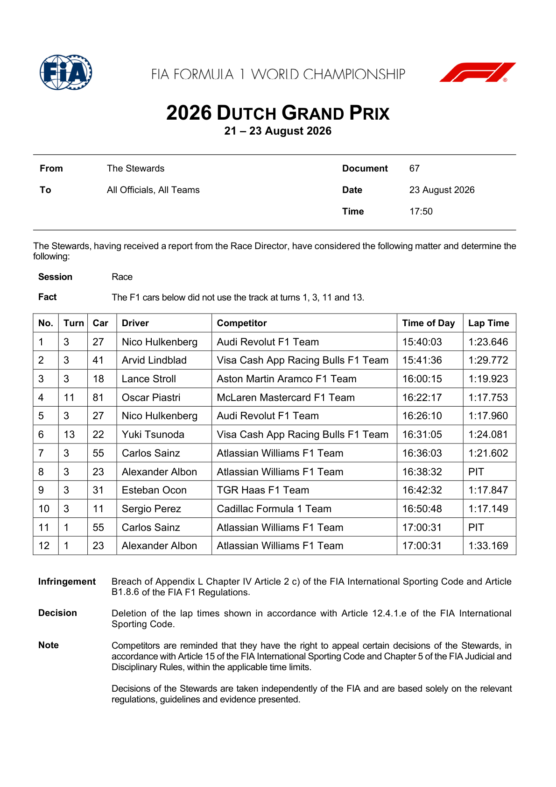 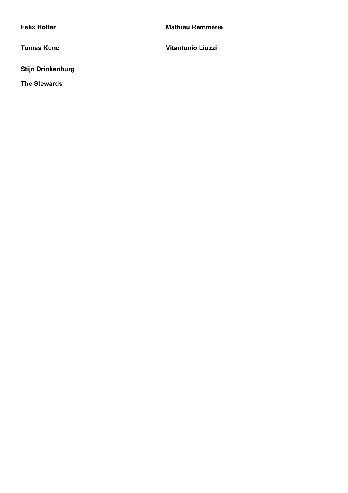 |
| Doc 68 | Carlos Sainz #55 Atlassian Williams F1 Team | Race | Causing a collision with Car 23 in Turn 1. | Penalty 10 second time penalty.View FIA decision — 1 pageOriginal FIA PDF. Retrieved 2026-09-25T06:13:38+00:00 (not the issue date). 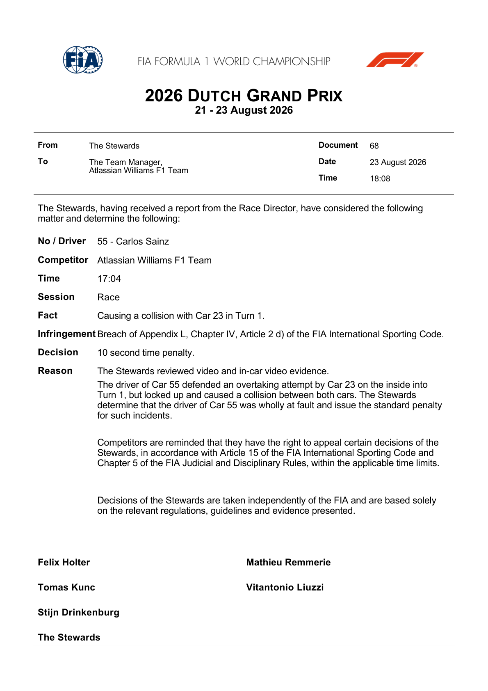 |
| Doc 69 | Oliver Bearman #87 TGR Haas F1 Team | Race | Car 87 left the pit lane when the light at the end of the pit lane was red. | Reprimand Driver: Reprimand (Driving).View FIA decision — 2 pagesOriginal FIA PDF. Retrieved 2026-09-25T06:13:38+00:00 (not the issue date). 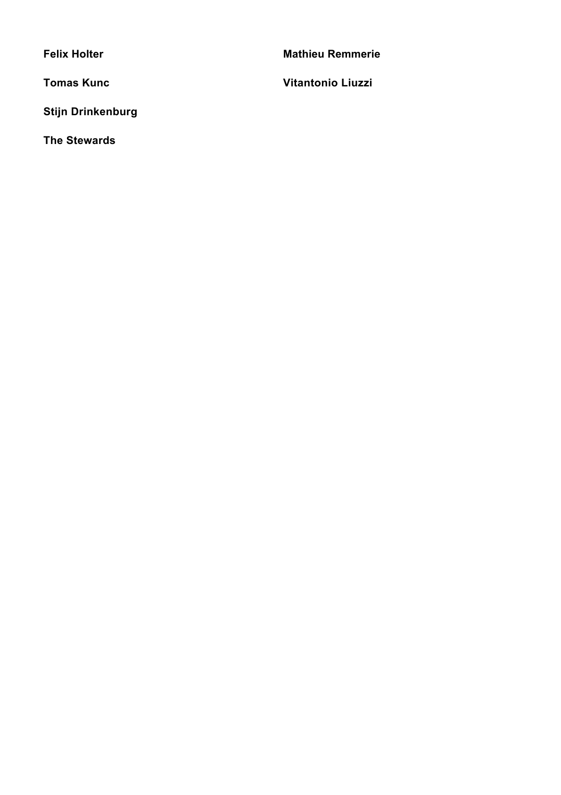 |
| Doc 70 | Gabriel Bortoleto #5 Audi Revolut F1 Team | Race | Car 5 left the pit lane when the light at the end of the pit lane was red. | Reprimand Driver: Reprimand (Driving).View FIA decision — 2 pagesOriginal FIA PDF. Retrieved 2026-09-25T06:13:38+00:00 (not the issue date). 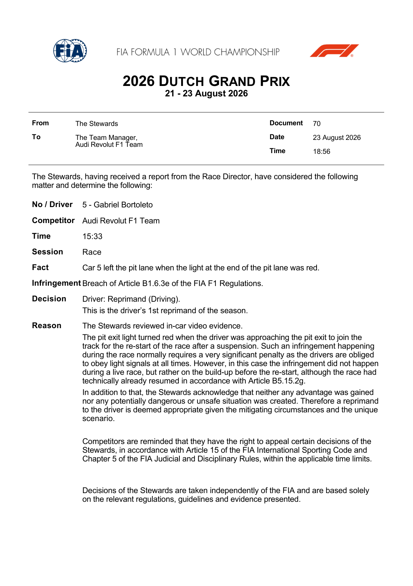  |
Source: FIA — Dutch Grand Prix documents (stewards' decisions).